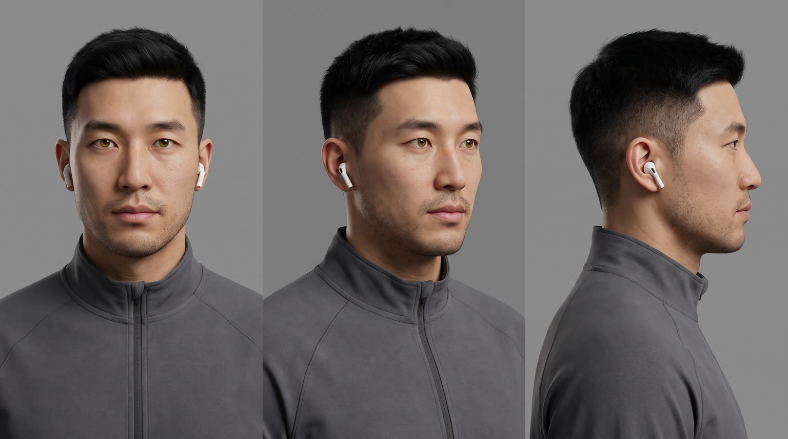
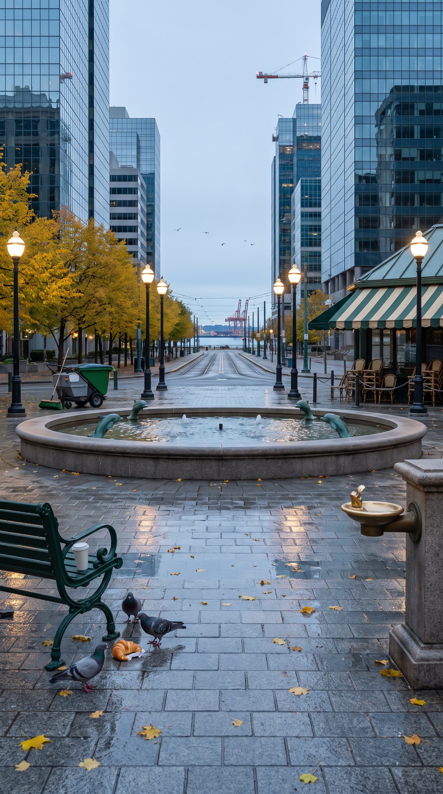
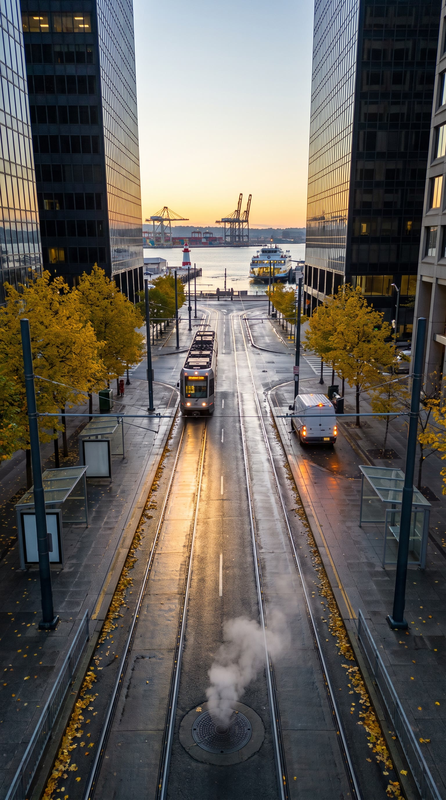
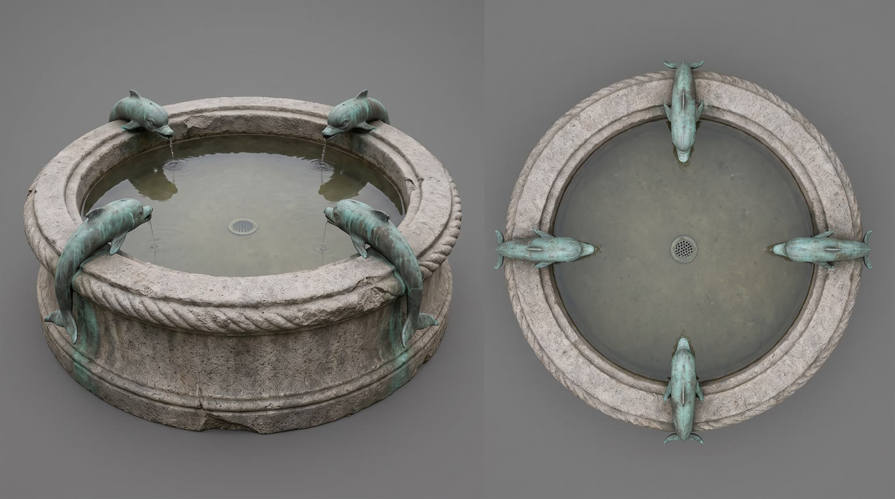
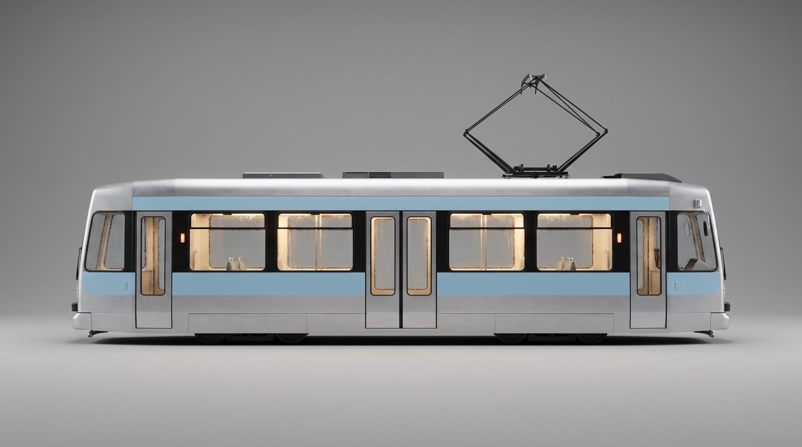

All templates · template.json · original storyboard
CGI product hero / FOOH (fake out of home)cgi_hero-01-stampedeStampede
Dawn in a sleeping city. A six storey {{product.name}} drops into the plaza fountain, and a giant spectacle made from its own look charges off it down the avenue, switching the whole city on as it runs.
Fit by product type
| ingested | great | a giant beverage or snack pack dripping in a fountain is classic fake out of home |
| applied | great | giant tubes and jars are the most proven FOOH subject; a glossy ribbon of the texture makes a strong spectacle |
| worn | great | a building-sized shoe, bag-like accessory or draped garment in a plaza reads instantly; the runner wears the real one at the end |
| handheld | great | a six storey device powering on, with light rings as the spectacle |
| carried | good | a giant bag standing in the fountain and springing open works; soft bags need to be shown upright |
| home | good | a sofa, lamp or appliance spanning the fountain basin is a strong stunt; the runner rests a hand on a normal-size one at the end instead of holding it |
| consumable | good | the giant pack works; the spectacle from the rule (a river of the contents, never the pack) carries it |
Refuses: products for children; alcohol; weapons, blades or anything that reads as a threat at building scale; products whose only visual is a person or mascot character (the rule falls back to material or colour, which weakens the stunt)
Cast, world and props (shipped with the template)





- Calloway is a fictional harbour city of 1.4 million on a cold northern bay. Founders' Plaza sits at the top of Ferris Avenue, a dead-straight 2 km run down to the ferry piers.
- The Founders' Fountain was carved in 1911 from grey granite: a round basin 30 metres across with four bronze dolphin spouts, green with verdigris, restored last spring.
- It is 6:04am on a Tuesday in late October. The first Harbor Line tram of the day leaves the plaza at 6:10; the street sweeper has just passed and the paving is still wet.
- Jae Park runs the same 8 km loop at this hour every weekday, plaza to piers and back, and has never once seen the city switch on before him.
- Kettle & Oar, the corner cafe on the plaza, opens at 6:30; its chairs are still stacked and chained under the striped awning.
Script: what each line must do
Right column is the worked example for Red Bull Sugarfree.
| Time | Speaker | Intent (template) | Example |
|---|---|---|---|
| 0.4-2.6 | vo (off camera) | Fixed: Somebody order a wake-up call? Max 7 words. Delivery: deep, warm, amused, trailer narrator but unhurried | Somebody order a wake-up call? |
| 8.8-10.8 | vo (off camera) | Name the spectacle as the product's arrival in 3 to 6 words, a playful command with a grin, fitted to the form the rule chose (animals: bring the herd; a wave: let it roll; light: switch it on). No product name, no claim. must match the spectacle form written in the fill; no benefit or claim in this line Max 6 words. Delivery: a grin in the voice, building | Big morning? Bring the herd. |
| 14.8-17.4 | vo (off camera) | The functional benefit in one line: ONE benefit from product.benefits, the one that best fits a city switching on at dawn. benefit comes only from product.benefits, reworded no further than person and tense; no brand name in this line Max 9 words. Delivery: confident, rhythmic, riding the rhythm of the spectacle | Caffeine helps you stay alert and focused. |
| 25.0-27.4 | vo (off camera) | Product line: say {{product.name}} and its point of difference, taken from product.benefits and different from the L3 benefit. point of difference comes only from product.benefits, reworded no further than person and tense; brand spoken as product.phonetic in the TTS Max 8 words. Delivery: slower, landing each word, satisfied | Red Bull Sugarfree. Same wings, no sugar. |
| 27.8-29.6 | vo (off camera) | Tagline: product.tagline if the page has one, otherwise a 3 to 5 word line that ties the product to the city waking up. Max 6 words. Delivery: warm, smiling, stretched vowel | Wiiings without sugar. |
Product-adjacent props by type
| ingested | car-sized cold droplets rolling down the product and splashing into the fountain; cold mist rolling off the product's top |
| applied | sheets of fountain water streaming off the glossy product; a single car-sized bead of its contents at the cap |
| worn | the product's stitching, grain or weave visible at giant scale, fountain water dripping from it |
| handheld | the product's lights or edges catching the golden rim light, water streaming off its surfaces |
| carried | water streaming off its straps, seams and zip pulls |
| home | the product level on its own feet or base across the fountain basin, water lapping around its legs |
| consumable | water streaming down the giant pack, its flap edges crisp |
Shots and how the product appears for each type
S01 · 0 to 1.8 s · reveal
The empty plaza at dawn, pigeons on the paving; the giant product falls out of the pale sky toward the fountain, motion blurred at its edges.
| ingested | {{product.visual}}, scaled up to the height of a six storey building, falling straight down toward the round fountain, perfectly upright with its label facing the camera, slight motion blur on its edges only |
| applied | {{product.visual}}, scaled up to the height of a six storey building, falling straight down toward the round fountain, perfectly upright with its label facing the camera, slight motion blur on its edges only |
| worn | {{product.visual}}, scaled up to building size, dropping toward the round fountain (a garment billows open like a parachute as it falls), logo facing the camera, slight motion blur on its edges only |
| handheld | {{product.visual}}, scaled up to the height of a six storey building, falling straight down toward the round fountain, perfectly upright with its label facing the camera, slight motion blur on its edges only |
| carried | {{product.visual}}, scaled up to the height of a six storey building, falling straight down toward the round fountain, perfectly upright with its label facing the camera, slight motion blur on its edges only |
| home | {{product.visual}}, scaled up so its longest side would span the 30 metre fountain basin, descending level and upright out of the sky toward the fountain, its best side to the camera, slight motion blur on its edges only |
| consumable | a pack of {{product.visual}}, scaled up to the height of a six storey building, falling straight down toward the round fountain, perfectly upright with its label facing the camera, slight motion blur on its edges only |
S02 · 1.8 to 3.6 s · hero
The product lands in the fountain: a ring of water explodes outward, pigeons burst into the air, a shockwave ripples the paving puddles.
| ingested | {{product.visual}}, six storeys tall, just landed perfectly upright in the centre of the round fountain, intact, label square to camera |
| applied | {{product.visual}}, six storeys tall, just landed perfectly upright in the centre of the round fountain, intact, label square to camera |
| worn | {{product.visual}}, building-sized, just landed in the centre of the round fountain (footwear on its sole, a watch or glasses on edge, a garment settling over the basin like a colossal draped tent), logo square to camera |
| handheld | {{product.visual}}, six storeys tall, just landed perfectly upright in the centre of the round fountain, intact, label square to camera |
| carried | {{product.visual}}, six storeys tall, just landed perfectly upright in the centre of the round fountain, intact, label square to camera |
| home | {{product.visual}}, building-sized, just set down level on its own feet or base across the whole fountain basin, best side to camera |
| consumable | a pack of {{product.visual}}, six storeys tall, just landed perfectly upright in the centre of the round fountain, intact, label square to camera |
S03 · 3.6 to 5.6 s · background
Jae, mid run, stops dead, pulls one earbud out and stares up; mist from the splash drifts past him.
| ingested | {{product.visual}} standing six storeys tall and upright in the fountain, label facing camera, recognisable |
| applied | {{product.visual}} standing six storeys tall and upright in the fountain, label facing camera, recognisable |
| worn | {{product.visual}}, building-sized in the fountain, logo facing camera, recognisable |
| handheld | {{product.visual}} standing six storeys tall and upright in the fountain, label facing camera, recognisable |
| carried | {{product.visual}} standing six storeys tall and upright in the fountain, label facing camera, recognisable |
| home | {{product.visual}}, spanning the fountain basin on its own base, best side to camera, recognisable |
| consumable | a pack of {{product.visual}} standing six storeys tall and upright in the fountain, label facing camera, recognisable |
S04 · 5.6 to 8.6 s · hero
The reveal: the giant product, cold and dripping; water streams off it into the fountain; golden sunrise rim light on its edge.
| ingested | {{product.visual}}, scaled up six storeys tall, upright in the fountain, label square to camera, condensation droplets as large as cars rolling down its side and falling into the water |
| applied | {{product.visual}}, scaled up six storeys tall, upright in the fountain, cap closed, label square to camera, sheets of fountain water streaming off its glossy sides |
| worn | {{product.visual}}, scaled up to building size in the fountain, logo square to camera, its stitching, grain or weave visible at giant scale, fountain water dripping from it |
| handheld | {{product.visual}}, scaled up six storeys tall, upright in the fountain, logo square to camera, water streaming off its surfaces, its edges and any lights catching the golden rim light |
| carried | {{product.visual}}, scaled up six storeys tall, standing upright in the fountain, logo square to camera, water streaming off its straps and seams |
| home | {{product.visual}}, scaled up so it spans the whole fountain basin, level on its own feet or base, best side to camera, water lapping around its base and its materials visible at giant scale |
| consumable | a pack of {{product.visual}}, scaled up six storeys tall, upright in the fountain, label square to camera, water streaming down it |
S05 · 8.6 to 11.0 s · hero
A burst of light in the product's accent colour at its base; the hero spectacle, built from the product's own logo motif, material or colour (world_bible.hero_spectacle), emerges onto the plaza, three storeys high, cracking the paving on its first step. The product's printed label stays exactly as it is.
| ingested | {{product.visual}}, six storeys tall and upright in the fountain, its top opening with a puff of cold mist (a beverage) or its wrapper peeling back (food) as a burst of light in its accent colour flares at its base |
| applied | {{product.visual}}, six storeys tall and upright in the fountain, its cap lifted open, a burst of light in its accent colour flaring at its base |
| worn | {{product.visual}}, building-sized in the fountain, a burst of light in its accent colour flaring at its base |
| handheld | {{product.visual}}, six storeys tall and upright in the fountain, humming with a deep resonant tone as it powers on or catches the light, a burst of light in its accent colour flaring at its base |
| carried | {{product.visual}}, six storeys tall and standing in the fountain, its main zip or clasp springing open, a burst of light in its accent colour flaring out of the opening |
| home | {{product.visual}}, spanning the fountain basin on its own base, switching on or settling with a deep hum, a burst of light in its accent colour flaring beneath it |
| consumable | a pack of {{product.visual}}, six storeys tall and upright in the fountain, its top flap opening, a burst of light in its accent colour flaring at its base |
S06 · 11.0 to 14.5 s · absent
The spectacle surges head-on toward camera down the avenue; streetlights flare and the dark shop windows light up warm as it passes.
S07 · 14.5 to 17.5 s · absent
From above: the spectacle races down the avenue and a wave of light spreads out through the grid behind it, tower by tower, the tram lights up.
S08 · 17.5 to 20.5 s · absent
Jae sprints on the pavement beside the spectacle's leading edge, laughing, keeping pace; lit windows streak past.
S09 · 20.5 to 24.5 s · absent
At the waterfront the spectacle leaps or surges off the end of the pier toward the rising sun and dissolves into light of its own colour; the whole skyline behind is now lit.
S10 · 24.5 to 30 s · hero
The plaza, now full morning: commuters walk around the base of the giant product in the fountain. Jae in the foreground with a normal-size one, grinning up at the giant one. A blank billboard on a tower waits for post text.
| ingested | holding the same product at normal size, {{product.visual}}, at chest height with its label facing camera |
| applied | holding the same product at normal size, {{product.visual}}, at chest height with its label facing camera |
| worn | wearing the same product at normal size, {{product.visual}}, clearly visible, standing so it faces camera |
| handheld | holding the same product at normal size, {{product.visual}}, at chest height with its logo facing camera |
| carried | with the same product at normal size, {{product.visual}}, on his shoulder or in his hand, logo facing camera |
| home | resting one hand on the same product at normal size, {{product.visual}}, set on the plaza paving beside him, best side to camera |
| consumable | holding a normal-size pack of the same product, {{product.visual}}, at chest height with its label facing camera |
Generation units (templated prompts)
U1 · 6 s
9:16 photoreal fake out of home CGI, dawn in a North American city plaza, cool blue grade, handheld street footage feel, upright frame with level horizon. Shot 1 (0 to 1.8 s): street level looking up past pigeons, {{action.S01}}, the product exactly as @Image1, toward the fountain of @Image2. Shot 2 (1.8 to 3.6 s): {{action.S02}}, a crown of water explodes outward, pigeons burst into the air, 4 frames of camera shake. Shot 3 (3.6 to 6 s): slow push-in on @Image3 (Jae), a runner who stops dead, pulls out an earbud and stares up as mist drifts past. The product never dents, tilts or changes. Native sound: city hush, rising air whistle, sub boom, water crash, window glass rattle, pigeon wings, runner's breath. No speech. No music. All signs blank, no text.U2 · 6 s · exact-risk
9:16 photoreal CGI hero. Shot 1 (0 to 3 s): low angle, slow 20 degree orbit around {{action.S04}}, the product exactly as @Image1, label square to camera and undistorted, golden rim light. Shot 2 (3 to 6 s): {{action.S05}}; out of the light [spectacle] from @Image2, three storeys tall, emerges onto the plaza, cracking the stone on its first step, steam in the cold air, turning to face the avenue. The product's printed label stays intact; the product does not move or change. Native sound: the product settling, heavy drips on water, low rumble, cracking stone, the spectacle's own sound. No speech. No music. No text.U3 · 14 s
9:16 photoreal CGI chase at dawn, upright frame, level horizon. Shot 1 (0 to 3.5 s): low head-on, [spectacle] from @Image3 surges toward camera down the avenue of @Image1, streetlights and shop windows switching on warm as it passes. Shot 2 (3.5 to 6.5 s): drone top-down moving with it, a wave of light spreading through the towers behind it, a plain silver tram lights up. Shot 3 (6.5 to 9.5 s): tracking beside it, @Image2 (Jae) sprints on the pavement next to its leading edge, laughing, same direction of travel. Shot 4 (9.5 to 14 s): extreme wide from behind, the spectacle leaps or surges off the end of a harbour pier into a huge rising sun and dissolves into light of its own colour while the whole skyline is now lit. It moves forward only, normal gravity, no extra legs. Native sound: the spectacle thundering on the street, streetlights buzzing on, wind, tram bell, a laugh, whoosh, gulls. No speech. No music. All signs blank, no text.
U4 · 6 s · exact-risk
9:16 photoreal CGI pack shot, bright morning. Slow push-in then hold on the plaza of @Image3: the giant product exactly as @Image1, scaled up in the fountain, label square to camera, commuters walking around its base; in the foreground @Image2 (Jae), {{action.S10}}, grinning up at the giant one. A blank white billboard on the tower stays empty. Neither product moves or changes. Native sound: busy morning plaza, fountain water, footsteps, a tram bell. No speech. No music. No text.